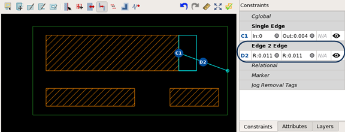

Specifying a Dynamic Extent for a TEM Pattern
A dynamic extent is one that moves with a constrained pattern edge. You define a dynamic extent with the Calibre Pattern Matching GUI by adding an edge to edge constraint between a pattern edge and an edge of a custom extent.
See “Dynamic Extents” for general information.
Prerequisites
A pattern library is open in the Calibre Pattern Matching GUI. See “Invoking the Calibre Pattern Matching GUI”.
A TEM pattern is selected in the pattern list. The TEM pattern should have the following:
A custom extent. See “Defining Custom and Per-Layer Extents for a TEM Pattern”.
At least one pattern edge with a single edge constraint. See “Adding a Single Edge Constraint”.
Procedure
- Click the Constraints tab at the bottom of the panel to the right of the pattern canvas to view the constraint list.
- Click the Add
Edge to Edge Constraint (
 ) button
above the pattern canvas.
) button
above the pattern canvas. - Do the following to add the
constraint:
- Click a pattern edge with a single edge constraint. Valid edges are outlined in green.
- Click
an edge on the custom extent that is parallel to the pattern edge.
Valid edges are outlined in green.
The constraint is entered in the “Edge 2 Edge” constraint list as a fixed distance constraint.
Note:If a dynamic extent is coincident with a pattern edge, the GUI prints a warning in the transcript pane that the edge is within the extent movement range and can cause possible matches to be missed. See “Behavior of Constrained Edges at the Pattern Extent”.
- (Optional) Double-click the constraint listing to add a label. This is the only parameter that can be edited.
- Choose to save changes to the pattern library.